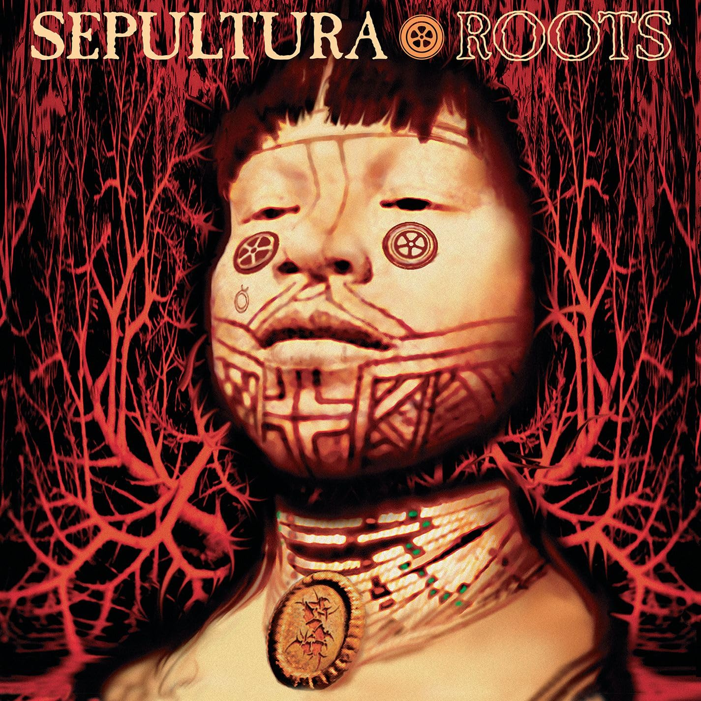

Roots - Sepultura

AVALIAÇÃO GERAL
Detalhes
- Álbum
- Roots
- Artista
- Sepultura
- Lançamento
- 1996
- Tipo
- Álbum de estúdio
- Gêneros
- Groove Metal, Nu Metal, Brazilian Music
Faixa a faixa
- Roots Bloody Roots95
- Attitude91
- Cut-Throat89
- Ratamahatta93
- Breed Apart90
- Straighthate81
- Spit76
- Lookaway71
- Dusted81
- Born Stubborn76
- Jasco98
- Itsári96
- Ambush100
- Endangered Species78
- Dictatorshit67
- Canyon JamN/A
Sobre o álbum.
Lançado em 20 de fevereiro de 1996 pela Roadrunner Records e produzido por Ross Robinson, é o disco em que o Sepultura assume de vez a brasilidade no som. A banda gravou percussão com indígenas Xavantes em uma aldeia no Mato Grosso e trouxe participações como Carlinhos Brown, Mike Patton e Jonathan Davis. “Roots Bloody Roots”, “Attitude” e “Ratamahatta” são algumas das faixas de destaque.
Análise.
Um marco do metal brasileiro e um dos discos mais pesados dos anos 90. O Sepultura incorpora percussão tribal, ritmos afro-brasileiros e a participação dos indígenas Xavantes, criando uma identidade que não soa como nenhuma outra banda de metal. Os riffs são densos e rítmicos, e a agressividade vem acompanhada de uma forte conexão com as raízes do país. A seriedade e raiva das faixas funcionam muito bem e fazem a experiência do álbum parecer amedrontadora e perturbadora. Com certeza um marco da cultura brasileira, uma expressão real de uma vertente nada explorada no Brasil.